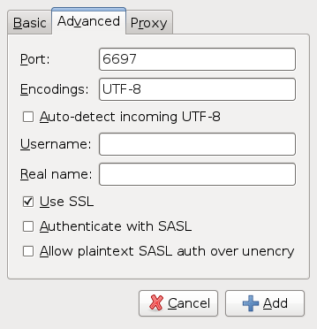

Common to purple based clients
Pidgin, Empathy and other libpurple based clients store the CA certificates in a common place.
Pidgin
Next, add the IRC server to your client:

Click "Add" in the "Manage Accounts" dialog and enter the following information in the Basic tab:

Now, we need to tell Pidgin that we want to have an encrypted connection. Make sure you change the port number to 6697 and check the SSL checkbox.

If you get the following message box, the installation of your CA certificate store went wrong.

In that case, click "View Certificate", which will bring this information window:

Copy the information and then click OK and accept and contact a staff member to help solve the problem.